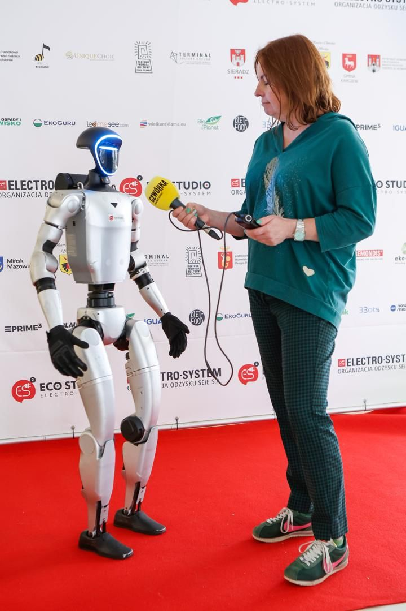

- Pradžia
- Galerija
Galerija · Kadrai iš pasirodymų
Taip robotas atrodo tikruose renginiuose
Kadrai iš tikrų 33bots realizacijų — nuo pokylio Drezdeno rūmuose ir didžiausios Europoje moterų technologijų konferencijos iki parodų stendų, vestuvių ir lauko paradų. Jokių stock nuotraukų ir jokių renderių.
Drezdeno pilių naktis
Pokylis Drezdeno rūmuose: robotas blizgučiais siuvinėtu smokingu ir su karūna — ant raudonojo kilimo, pokylių salėje ir tarp svečių.


Women in Tech Summit
Didžiausia Europoje moterų technologijų konferencija, apie 14 000 dalyvių EXPO XXI centre Varšuvoje. Robotas pasirodė ant podiumo ir tarp dalyvių.


LEX AI senamiestyje
Robotas stovėjo prie Neptūno fontano Gdansko Ilgajame turguje kaip programėlės simbolis — sveikinosi su praeiviais, spaudė jiems ranką ir pozavo nuotraukoms. Akciją parodė TVP „Teleexpress“.


Eco Studio ELECTRO-SYSTEM finalas
Visos Lenkijos švietimo ir ekologijos projekto mokykloms finalas: robotas scenoje su vedėjais ir finalininkais, interviu prie rėmėjų sienelės. Organizatorius suteikė 33bots Eko Partnerio 2026 vardą.


Parodų stendai
MSPO paroda Kielcuose ir Warsaw Medical Expo: robotas pristatė įmones, kvietė lankytojus į demonstracijas ir stabdė srautą praėjime.


Vestuvės ir vakaro pasirodymai
Šokių aikštelė vestuvėse ir naktinis pasirodymas prie rūmų: tamsoje ir dūmuose robotas atrodo dar įspūdingiau.


Mokyklos ir mokslo centrai
Mokslo metų pradžia mokykloje „Kosmos“ ir vakaras suaugusiesiems Koperniko mokslo centre Varšuvoje.


Lauko renginiai ir šventės
Valsčiaus paradas ir Rudens vidurio šventė: robotas dirba ir lauke, tarp šimtų žmonių.


Visose nuotraukose matyti kliento ženklinimas — marškinėliai, logotipas ar QR kodas. Jis įskaičiuotas į kiekvieną nuomos paketą. Judesį ir šokį geriausiai parodo vaizdo įrašai iš renginių.